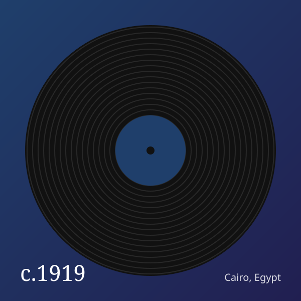

The song that sang a banned name without saying it
When Egypt's British rulers banned the name Zaghloul, singers sold dates instead.

- who
- Naʿīma al-Miṣriyya; music Sayyid Darwīsh, words Badīʿ Khayrī
- what
- “Yā Balaḥ Zaghlūl” (يا بلح زغلول), Mechian disc
- when
- c.1919
- where
- Cairo, Egypt
In 1919 the British exiled Saad Zaghloul, the leader of Egypt's independence movement. Egyptian accounts say the military authorities then made it an offence even to say his name, punishable by prison and the lash.
The answer came from the street-song writers Badīʿ Khayrī and Sayyid Darwīsh: a little ṭaqṭūqa apparently about dates. Zaghlūl is also a variety of date. "O Zaghloul dates, O sweet dates" is a fruit-seller's cry that a whole city could sing while meaning the man.
The voice on the record is Naʿīma al-Miṣriyya, Cairo's "queen of the records", a woman who made around 150 discs. When it was recorded is still argued over: one scholar files her first Mechian session under 1915, which cannot fit a tribute to a man exiled in 1919. Her personal archive is being digitised, and the answer may be in there.